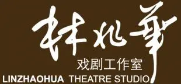
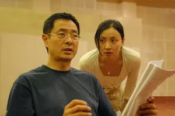
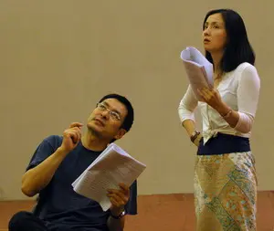
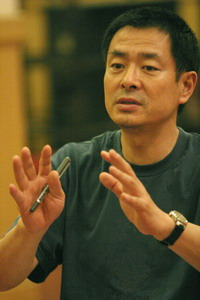
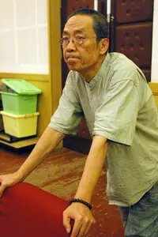
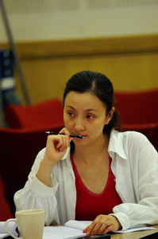
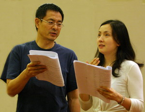
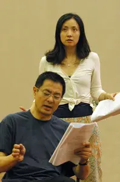
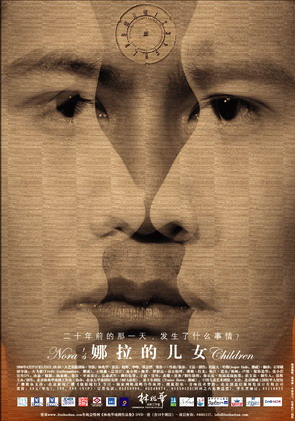
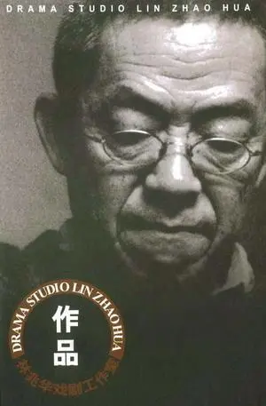

林兆华
戏剧工作室Lin Zhaohua
Theatre Studio
工作室不是一张机构名片，而是一种生产方式：以小规模、跨艺术门类和独立创作的方式持续试验舞台形式。The Studio is not simply an institutional label; it is a mode of production that continuously tests stage form through small-scale, cross-disciplinary and independent creation.
The Studio is not simply an institution; it is a mode of production — small-scale, cross-disciplinary and continuously experimental.

一戏一格A Distinct Form for Each Production
公开访谈中，林兆华多次把导演工作理解为在剧本文学基础上建立自己的舞台结构，而不是简单“解释剧本”。In public interviews, Lin repeatedly described directing as building an independent stage structure from the dramatic text, rather than simply “explaining the script.”
Studio
as Laboratory
从《哈姆雷特1990》《罗慕洛斯大帝》到《故事新编》《建筑大师》，工作室作品不断测试表演、舞美、音乐、身体和观演关系。From Hamlet 1990 and Romulus the Great to Old Tales Retold and The Master Builder, Studio productions continually tested acting, scenography, music, physicality and the relationship between performers and audiences.
上述自述来自《导演小人书》；相关访谈也记录了工作室早期的独立运作方式。These first-person passages come from Director’s Memoir; related interviews also document the Studio’s early independent mode of operation.
工作室重点作品Selected Studio Works
旧网站：工作室专题资料Original Website: Studio Feature Archive
以下图片严格按你提供的旧网站页面归位，不把不同页面的图片混配到作品卡。These images are placed according to the pages of the supplied old website, rather than being mixed into unrelated work cards.









